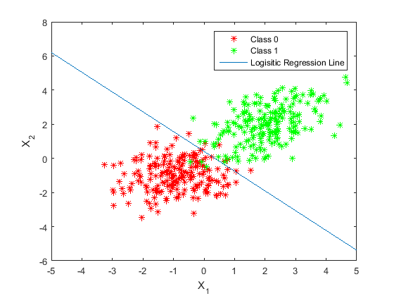

Machine Learning Mini-MATLAB Project 3
Dennis Gavrilov, Andrew Koe, Miraj Patel Gaussian Generative Model and Logisitic Regression
Contents
Circles
clc; clear all; close all; load('C:\Users\mirag\Desktop\MachineLearning\MATLAB-MiniProject3\data.mat'); x0 = circles.x(1:200,1); y0 = circles.x(1:200,2); z0 = x0.^2 + y0.^2; x1 = circles.x(201:end,1); y1 = circles.x(201:end,2); z1 = x1.^2 + y1.^2; % Compute mean and covariance vectors/matrices for the generative model % formulas mu_circ0 = [sum(x0)/length(x0); sum(y0)/length(y0); sum(z0)/length(z0)]; mu_circ1 = [sum(x1)/length(x1); sum(y1)/length(y1); sum(z1)/length(z1)]; covar_circ0 = zeros(3); for nIter=1:length(x0) covar_circ0 = covar_circ0 + (([x0(nIter); y0(nIter);z0(nIter)] - mu_circ0)*([x0(nIter); y0(nIter);z0(nIter)] - mu_circ0)'); end covar_circ0 = covar_circ0/length(x0); covar_circ1 = zeros(3); for nIter=1:length(x1) covar_circ1 = covar_circ1 + (([x1(nIter); y1(nIter);z1(nIter)] - mu_circ1)*([x1(nIter); y1(nIter);z1(nIter)] - mu_circ1)'); end covar_circ1 = covar_circ1/length(x1); Sigma_circ = (covar_circ0 + covar_circ1)/2; % SEE EQN 4.66 inv_Sigma_circ = inv(Sigma_circ); w_circ = inv_Sigma_circ * (mu_circ0 - mu_circ1); %Assume C0 and C1 are equally likely making the last term of w0 = 0 w0_circ = -0.5*(mu_circ0)'*inv_Sigma_circ*(mu_circ0) + 0.5*(mu_circ1)'*inv_Sigma_circ*(mu_circ1); circ_x0 = -5:.5:5; [circ_x0, circ_x1] = meshgrid(circ_x0, circ_x0); circ_x2 = (-w0_circ - w_circ(1)*circ_x0 - w_circ(2)*circ_x1)/w_circ(3); figure; title('Circles Gaussian Generative Model Linear Classifier'); scatter3(x0,y0,z0,'r*'); hold on; scatter3(x1,y1,z1,'g*'); plot3(circ_x0, circ_x1, circ_x2, 'b-', 'markers', 15); legend('Class 0', 'Class 1', 'Linear Classifier'); % Set camera position to show the plane dividing the two regions view([-65.5 -28]) camtarget([-0.2 0.99 0.004]) campos([-69.781 -30.719 -203.283]) zoom(9) hold off; % Define anonymous functions: basis function that just squares the % coordinate, sigmoid function, and y(phi) square_basis = @(x) (x.^2); sigmoid_fn = @(a) 1./(1+exp(-a)); y_phi = @(weights, phi) sigmoid_fn(weights'*phi'); features = [(circles.x(:,1)) (circles.x(:,2))]; radius = sqrt(sum(features, 2)); features = [features radius]; t_labels = circles.y; % N = 400, M = 4 (phi_0 = 1, x1 and x2 and radius); design_matrix = [ones(length(t_labels),1) features]; weights = rand(4, 1); error = 1; while(error >= 0.01) y = y_phi(weights, design_matrix); R = diag(y.*(1 - y)); z = design_matrix*weights - inv(R)*(y' - t_labels); weights = inv(design_matrix'*R*design_matrix)*design_matrix'*R*z; error = sum((y' - t_labels).^2)/length(t_labels); if det(R) < 0.05 break; end end x_iter = -5:.5:5; y_iter = -5:.5:5; [x_iter y_iter] = meshgrid(x_iter, y_iter); z_plane = (-weights(1) - weights(2)*x_iter - weights(3)*y_iter)/weights(4); figure; title('Circles Logisitic Regression'); plot3(features(:, 1), features(:, 2), features(:, 3), 'r*'); hold on; plot3(x_iter, y_iter, z_plane, 'b-'); hold off; view([-193.5 26]) camtarget([0 0 0.62]) campos([18.171 75.687 34.788]) zoom(5)
Spirals
close all; x0 = spiral.x(1:200,1); y0 = spiral.x(1:200,2); theta0 = atan(y0./x0); r0 = y0./sin(theta0); x1 = spiral.x(201:end,1); y1 = spiral.x(201:end,2); theta1 = atan(y1./x1); r1 = y1./sin(theta1); figure; polar(theta0, r0, 'r-'); hold on; polar(theta1, r1, 'g-'); hold off; returnMatrix = sort([r0, theta0], 1); r0 = returnMatrix(:, 1); theta0 = returnMatrix(:, 2); returnMatrix = sort([r1, theta1], 1); r1 = returnMatrix(:, 1); theta1 = returnMatrix(:, 2); figure; plot(theta0, r0, 'r-') hold on; plot(theta1, r1, 'g-') mu_spiral0 = [sum(r0)/length(r0); sum(theta0)/length(theta0)]; mu_spiral1 = [sum(r1)/length(r1); sum(theta1)/length(theta1)]; covar_spiral0 = zeros(2); for nIter=1:length(r0) covar_spiral0 = covar_spiral0 + (([r0(nIter); theta0(nIter)] - mu_spiral0)*([r0(nIter); theta0(nIter)] - mu_spiral0)'); end covar_spiral0 = covar_spiral0/length(r0); covar_spiral1 = zeros(2); for nIter=1:length(r1) covar_spiral1 = covar_spiral1 + (([r1(nIter); theta1(nIter)] - mu_spiral1)*([r1(nIter); theta1(nIter)] - mu_spiral1)'); end covar_spiral1 = covar_spiral1/length(r1); Sigma_spiral = (covar_spiral0 + covar_spiral1)/2; % SEE EQN 4.66 inv_Sigma_spiral = inv(Sigma_spiral); w_spiral = inv_Sigma_spiral * (mu_spiral0 - mu_spiral1) %Assume C0 and C1 are equally likely making the last term of w0 = 0 w0_spiral = -0.5*(mu_spiral0)'*inv_Sigma_spiral*(mu_spiral0) + 0.5*(mu_spiral1)'*inv_Sigma_spiral*(mu_spiral1); spiral_x0 = -1.5:.1:1.5; spiral_x1 = (-w0_spiral - w_spiral(2)*spiral_x0)/w_spiral(1); title('Spirals Gaussian Generative Linear Classification'); xlabel('X_{0}'); ylabel('X_{1}'); plot(spiral_x0, spiral_x1, 'b-'); legend('Class 0', 'Class 1', 'Linear Classifier'); hold off;
w_spiral =
2.5836
-10.1119
Unimodal
x4 = unimodal.x(1:200,1); y4 = unimodal.x(1:200,2); x5 = unimodal.x(201:end,1); y5 = unimodal.x(201:end,2); mu_uni0 = [sum(x4)/length(x4); sum(y4)/length(y4)]; mu_uni1 = [sum(x5)/length(x5); sum(y5)/length(y5)]; covar_uni0 = zeros(2); for nIter=1:length(x4) covar_uni0 = covar_uni0 + (([x4(nIter); y4(nIter)] - mu_uni0)*([x4(nIter); y4(nIter)] - mu_uni0)'); end covar_uni0 = covar_uni0/length(x4); covar_uni1 = zeros(2); for nIter=1:length(x5) covar_uni1 = covar_uni1 + (([x5(nIter); y5(nIter)] - mu_uni1)*([x5(nIter); y5(nIter)] - mu_uni1)'); end covar_uni1 = covar_uni1/length(x5); Sigma_uni = (covar_uni0 + covar_uni1)/2 % SEE EQN 4.66 inv_Sigma_uni = inv(Sigma_uni) w_uni = inv_Sigma_uni * (mu_uni0 - mu_uni1); %Assume C0 and C1 are equally likely making the last term of w0 = 0 w0_uni = -0.5*(mu_uni0)'*inv_Sigma_uni*(mu_uni0) + 0.5*(mu_uni1)'*inv_Sigma_uni*(mu_uni1); uni_x0 = -5:.1:5; uni_x1 = (-w0_uni - w_uni(1)*uni_x0)/w_uni(2); figure; title('Unimodal Gaussian Generative Model Linear Classifier'); plot(x4,y4,'r*') hold on; plot(x5,y5,'g*') plot(uni_x0, uni_x1); ylim([-6 8]); xlabel('X_{1}'); ylabel('X_{2}'); legend('Class 0', 'Class 1', 'Linear Classifier'); hold off; sigmoid_fn = @(a) 1./(1+exp(-a)); y_phi = @(weights, phi) sigmoid_fn(weights'*phi'); % No transformation required again? features = [(unimodal.x(:,1)) (unimodal.x(:,2))]; t_labels = unimodal.y; % N = 400, M = 3 (phi_0 = 1, x1 and x2); design_matrix = [ones(length(t_labels),1) features]; weights = rand(3, 1); error = 1; while(error >= 0.01) y = y_phi(weights, design_matrix); R = diag(y.*(1 - y)); z = design_matrix*weights - inv(R)*(y' - t_labels); weights = inv(design_matrix'*R*design_matrix)*design_matrix'*R*z; error = sum((y' - t_labels).^2)/length(t_labels); if det(R) < 0.05 break; end end x_iter = -5:.5:5; y_line = (-weights(1) - weights(2)*x_iter)/weights(3); figure; title('Logisitic Regression for Unimodal'); % Plot class 0 plot(features(1:200, 1), features(1:200, 2), 'r*'); hold on; % Plot class 1 plot(features(201:end, 1), features(201:end, 2), 'g*'); plot(x_iter, y_line); ylim([-6 8]); xlabel('X_{1}'); ylabel('X_{2}'); legend('Class 0', 'Class 1', 'Logisitic Regression Line'); hold off;
Sigma_uni =
0.8974 0.3005
0.3005 1.0349
inv_Sigma_uni =
1.2343 -0.3584
-0.3584 1.0703
 Bimodal
x6 = bimodal.x(1:200,1); y6 = bimodal.x(1:200,2); muX_class0_first = mean(x6(1:100)); sigmaX_class0_first = std(x6(1:100)); muY_class0_first = mean(y6(1:100)); sigmaY_class0_first = std(y6(1:100)); covarXY_class0_first = cov(x6(1:100), y6(1:100)); muX_class0_second = mean(x6(101:end)); sigmaX_class0_second = std(x6(101:end)); muY_class0_second = mean(y6(101:end)); sigmaY_class0_second = std(y6(101:end)); covarXY_class0_second = cov(x6(101:end), y6(101:end)); x7 = bimodal.x(201:end,1); y7 = bimodal.x(201:end,2); muX_class1_first = mean(x7(1:100)); muX_class1_second = mean(x7(101:end)); muY_class1_first = mean(y7(1:100)); muY_class1_second = mean(y7(101:end)); sigmaX_class1_first = std(x7(1:100)); sigmaX_class1_second = std(x7(101:end)); sigmaY_class1_first = std(y7(1:100)); sigmaY_class1_second = std(y7(101:end)); covarXY_class1_first = cov(x7(1:100), y7(1:100)); covarXY_class1_second = cov(x7(101:end), y7(101:end)); figure; plot(x6,y6,'r*') hold on; plot(x7,y7,'b*') hold off; bimodal_x = bimodal.x(:,1); bimodal_y = bimodal.x(:,2); % The nonlinear transformation takes advantage of the ML characteristics of % the two modes of each class and thus separates the classes based on sign % in the newly introduced 3rd dimension (z) bimodal_z = mvnpdf([bimodal_x bimodal_y], [muX_class0_first muY_class0_first], covarXY_class0_first) + mvnpdf([bimodal_x bimodal_y], [muX_class0_second muY_class0_second], covarXY_class0_second) - mvnpdf([bimodal_x bimodal_y], [muX_class1_first muY_class1_first], covarXY_class1_first) - mvnpdf([bimodal_x bimodal_y], [muX_class1_second muY_class1_second], covarXY_class1_second); % Things of class 0, either mode, will be positive, and things of class 1 % will be negative using this transformation (all x1 aka x, and x2 aka y) % are fed into the sum of bivariate pdf functions to create a binary % classifier of sorts figure; plot3(bimodal_x(1:200), bimodal_y(1:200), bimodal_z(1:200), 'r*'); hold on; plot3(bimodal_x(201:end), bimodal_y(201:end), bimodal_z(201:end), 'g*'); % The hyperplane of separation is z = 0 plane_x = -10:.5:10; plane_y = -10:.5:10; [plane_x, plane_y] = meshgrid(plane_x, plane_y); plane_z = zeros(size(plane_x)); plot3(plane_x, plane_y, plane_z, 'b-', 'markers', 15); hold off; title('Bimodal Gaussian Generative Model Linear Classifier'); xlabel('x_{1}'); ylabel('x_{2}'); legend('Class 0', 'Class 1', 'Linear Classifier'); camtarget([0 0 0]) campos([-14.377 -149.309 1.732]) view([40 35]) zoom(1.25) sigmoid_fn = @(a) 1./(1+exp(-a)); y_phi = @(weights, phi) sigmoid_fn(weights'*phi'); features = [(bimodal.x(:,1)) (bimodal.x(:,2))]; gaussian_sum_basis = mvnpdf([bimodal.x(:,1) bimodal.x(:,2)], [muX_class0_first muY_class0_first], covarXY_class0_first) + mvnpdf([bimodal.x(:,1) bimodal.x(:,2)], [muX_class0_second muY_class0_second], covarXY_class0_second) - mvnpdf([bimodal.x(:,1) bimodal.x(:,2)], [muX_class1_first muY_class1_first], covarXY_class1_first) - mvnpdf([bimodal.x(:,1) bimodal.x(:,2)], [muX_class1_second muY_class1_second], covarXY_class1_second); features = [features gaussian_sum_basis]; t_labels = bimodal.y; % N = 400, M = 4 (phi_0 = 1, x1 and x2 and the gaussian-weighting); design_matrix = [ones(length(t_labels),1) features]; weights = [1; 0; 0; 0]; error = 1; while(error >= 0.01) initial_error = error; y = y_phi(weights, design_matrix); R = diag(y.*(1 - y)); z = design_matrix*weights - inv(R)*(y' - t_labels); weights = inv(design_matrix'*R*design_matrix)*design_matrix'*R*z; error = sum((y' - t_labels).^2)/length(t_labels); % Prevent singular matrix error that causes NaN in weights if det(R) < 0.05 break; end end % Where it is obvious that the basis function makes the divide easily at % the plane z = 0, the outliers of data points in a certain class found in % regions where points of the opposite class dominate ruin this regression % plane -- the R matrix also becomes singular rather rapidly x_iter = -5:.5:5; y_iter = -5:.5:5; [x_iter y_iter] = meshgrid(x_iter, y_iter); z_plane = (-weights(1) - weights(2)*x_iter - weights(3)*y_iter)/weights(4); figure; title('Bimodal Logisitic Regression'); plot3(features(:, 1), features(:, 2), features(:, 3), 'r*'); hold on; plot3(x_iter, y_iter, z_plane, 'b-'); hold off; camtarget([0 0 0]) campos([-14.377 -149.309 1.732]) view([40 35]) zoom(1.25)